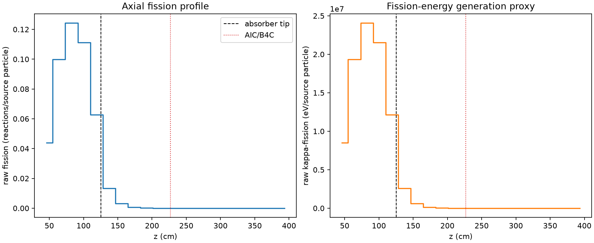
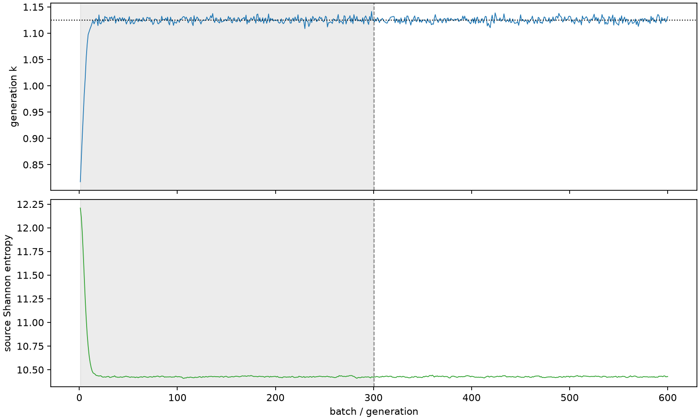

| field | value |
|---|---|
| experiment | V2-STAGE_128_OGRENCI_04-0006 |
| k | 1.1249566818281076 |
| MC standard error | 0.0001863189955807385 |
| seconds | 998.3884896290001 |
| acceptance | not_assessed |
| convergence | review_required |
Completed is output integrity only; physical and statistical review required. Zero tallies do not prove zero production or zero uncertainty.
| diagnostic | value |
|---|---|
| geometric fuel voxels | 5280 |
| zero fission tally voxels | 1775 |
| low signal fuel voxels | 2825 |
| low signal fission share | 9.766369827285968e-05 |
| low signal kappa share | 9.770574863090658e-05 |
| important fission share | 0.9500111425466001 |
| previous filter included | 2455 |
| duration estimate s | 1562.5173488400023 |
| actual minus estimate s | -564.1288592110022 |
| fission relative MC error | statistics |
|---|---|
| all_geometric_fuel | {"voxels": 5280, "positive_mean_voxels": 3505, "zero_mean_voxels": 1775, "undefined_relative_error_voxels": 1775, "median": 0.027561612207860957, "p95": 0.9665644217697584, "maximum": 1.0000000000000002} |
| low_signal | {"voxels": 2825, "positive_mean_voxels": 1050, "zero_mean_voxels": 1775, "undefined_relative_error_voxels": 1775, "median": 0.5885834386969816, "p95": 1.0, "maximum": 1.0000000000000002} |
| important_95pct | {"voxels": 1285, "positive_mean_voxels": 1285, "zero_mean_voxels": 0, "undefined_relative_error_voxels": 0, "median": 0.00506307205052098, "p95": 0.007651761084834962, "maximum": 0.008681731300499885} |
| outside_previous_filter | {"voxels": 2825, "positive_mean_voxels": 1050, "zero_mean_voxels": 1775, "undefined_relative_error_voxels": 1775, "median": 0.5885834386969816, "p95": 1.0, "maximum": 1.0000000000000002} |
| kappa_fission relative MC error | statistics |
|---|---|
| all_geometric_fuel | {"voxels": 5280, "positive_mean_voxels": 3505, "zero_mean_voxels": 1775, "undefined_relative_error_voxels": 1775, "median": 0.02751941894876422, "p95": 0.9665524654970367, "maximum": 1.0000000000000002} |
| low_signal | {"voxels": 2825, "positive_mean_voxels": 1050, "zero_mean_voxels": 1775, "undefined_relative_error_voxels": 1775, "median": 0.5884477826117728, "p95": 1.0, "maximum": 1.0000000000000002} |
| important_95pct | {"voxels": 1285, "positive_mean_voxels": 1285, "zero_mean_voxels": 0, "undefined_relative_error_voxels": 0, "median": 0.005057780710639805, "p95": 0.007641708089339836, "maximum": 0.008670390727578931} |
| outside_previous_filter | {"voxels": 2825, "positive_mean_voxels": 1050, "zero_mean_voxels": 1775, "undefined_relative_error_voxels": 1775, "median": 0.5884477826117728, "p95": 1.0, "maximum": 1.0000000000000002} |
| axial bin | fission share | kappa-fission share |
|---|---|---|
| 1 | 0.09559280323447876 | 0.09559510659538659 |
| 2 | 0.21726396955680388 | 0.2172590225484937 |
| 3 | 0.2705412234346979 | 0.27053439795508333 |
| 4 | 0.24197300268137134 | 0.2419672285219846 |
| 5 | 0.13667293192973204 | 0.13667404329220068 |
| 6 | 0.028995752008037213 | 0.02900637730302152 |
| 7 | 0.006808997558096251 | 0.006811576418700094 |
| 8 | 0.0016231760334201601 | 0.0016238690780549913 |
| 9 | 0.00040149964857763294 | 0.0004016764722625201 |
| 10 | 9.855497327735474e-05 | 9.85974978078582e-05 |
| 11 | 2.219793737787936e-05 | 2.2208599708310777e-05 |
| 12 | 4.361403486096226e-06 | 4.365237878327519e-06 |
| 13 | 1.012991796603421e-06 | 1.0136643250595958e-06 |
| 14 | 5.074331001323297e-07 | 5.076510846499211e-07 |
| 15 | 9.175746798941784e-09 | 9.164007775286639e-09 |
| 16 | 0.0 | 0.0 |
| 17 | 0.0 | 0.0 |
| 18 | 0.0 | 0.0 |
| 19 | 0.0 | 0.0 |
| 20 | 0.0 | 0.0 |
Histories include the inactive-to-active transition at batch 300. kappa-fission approximates fission energy production, not total heat deposition.

